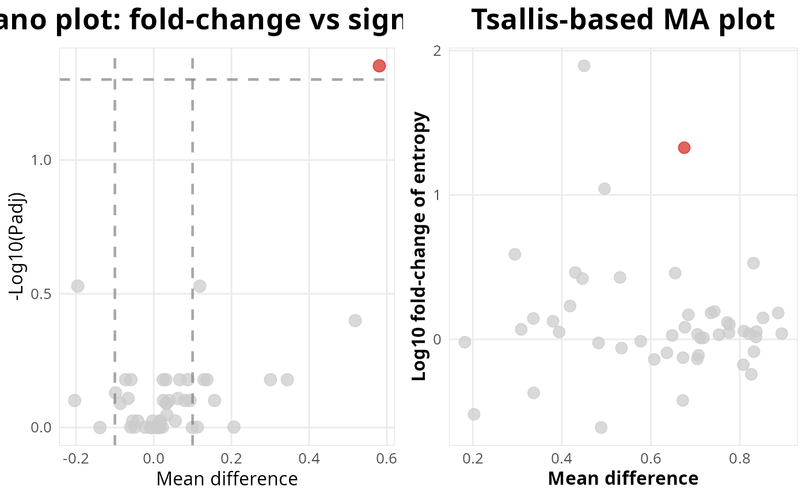

Plot Volcano and MA Grid from Differential Analysis Results (S4 Wrapper)
Source:R/s4_functions.R
plot_diversity_volcano_ma.RdS4 wrapper that extracts differential analysis results from a TSENATAnalysis object and creates side-by-side volcano and MA plots for comparing control and treatment groups.
Usage
plot_diversity_volcano_ma(
analysis,
x_col = NULL,
padj_col = "padj",
label_thresh = 0.1,
sig_alpha = 0.05,
top_n = 5,
title_volcano = NULL,
title_ma = "Tsallis-based MA plot",
verbose = FALSE,
output_file = NULL,
width = 12,
height = 7.2,
...
)Arguments
- analysis
TSENATAnalysisobject with calculated differences (typically viacalculate_difference).- x_col
character. Column name for x-axis in MA plot. Default: NULL (uses mean_difference if available, else mean fold-change).- padj_col
character. Column name for adjusted p-values. Default: 'padj' (the standard column name from calculate_difference).- label_thresh
numeric. P-value threshold for labeling top genes. Genes with adjusted p-value below this threshold are labeled. Default: 0.1.- sig_alpha
numeric. Significance threshold for coloring significant differences. Points with adjusted p-value below sig_alpha are highlighted. Default: 0.05.- top_n
integer. Number of top genes (by significance) to label in volcano plot. Default: 5.- title_volcano
character. Title for volcano plot. Default: NULL (no title).- title_ma
character. Title for MA plot. Default: 'Tsallis-based MA plot'.- verbose
logical. Print status messages. Default: FALSE.- output_file
characterorNULL. Optional file path to save the plot. Default: NULL (no file output).- width
numeric. Width of the output plot in inches (default: 12). Only used if output_file is provided.- height
numeric. Height of the output plot in inches (default: 7. 2). Only used if output_file is provided.- ...
Additional arguments passed to the base plotting function.
Value
Invisibly returns a cowplot grid object containing both volcano and MA plots combined side-by-side. If the plot cannot be created, returns NULL invisibly.
Details
This wrapper extracts the difference results data frame from
analysis@pairwise_results$difference and passes it to the base
.plot_diversity_volcano_ma() function.
**Required Data:**
Differential analysis must be computed via
calculate_difference()Results are stored in
analysis@pairwise_results$difference
**Expected Columns in Difference Results:**
genesorgene_id: Gene identifiersNormal_mean,Tumor_mean: Group means (or equivalent controls/treatments)mean_difference: Calculated difference between groupslog2_fold_change: Log2 fold-change valuesraw_p_valuesorpvalue: Un-adjusted p-valuesadjusted_p_valuesorpadj: Adjusted p-values (default column used)
**Volcano Plot Features:**
X-axis: log2 fold-change or mean difference
Y-axis: -log10(adjusted p-value)
Top significant genes labeled
Points colored by significance threshold
**MA Plot Features:**
X-axis: Average expression level (A)
Y-axis: Log2 fold-change (M)
Loess curve showing trend
Significant changes highlighted
See also
calculate_difference for computing differential analysis.
Examples
# Load example data (matching TSENAT.Rmd workflow)
data(readcounts)
readcounts <- as.matrix(readcounts)
mode(readcounts) <- 'numeric'
metadata_df <- read.table(
system.file('extdata', 'metadata.tsv', package = 'TSENAT'),
header = TRUE, sep = '\t'
)
gff3_dataset <- system.file('extdata', 'annotation.gff3.gz', package =
'TSENAT')
# Create config (metadata passed as explicit parameter to build_analysis)
config <- TSENAT_config(
sample_col = 'sample',
condition_col = 'condition',
q_values = seq(0, 2, by = 0.05),
paired = FALSE
)
# Build analysis from vignette data and create small subset
analysis <- build_analysis(
readcounts = readcounts,
tx2gene = gff3_dataset,
metadata = metadata_df,
config = config,
tpm = tpm,
effective_length = effective_length
)
analysis <- filter_analysis(analysis, min_samples = 1, subset_n_genes = 200)
analysis <- calculate_diversity(analysis, q = c(0.5, 1.0, 1.5))
#> Note: 37 genes excluded (< 75% valid values).
analysis <- calculate_difference(analysis, q = 1.0, control = 'normal')
# Plot volcano and MA plots
p <- plot_diversity_volcano_ma(analysis, sig_alpha = 0.05, top_n = 3)
print(p)
